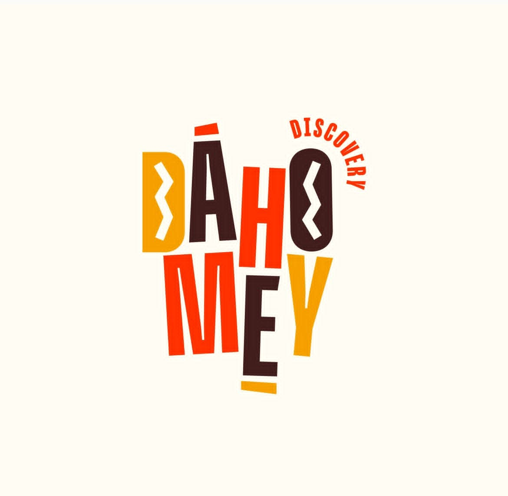

Bienvenue !
CIRCUIT JOUR ☀️
Découverte historique & culturelle
➤
CIRCUIT NUIT 🌙
Ambiance nocturne & lumières
➤
🎮 TESTER EN SIMULATION (SANS GPS)
⬅️
MODE:
---
🔴 GPS OFF
⬆️
DÉTAILS
Arrêt Actuel
---
Prochain :
---
Distance :
---
Prêt pour le départ.
🔁 Rejouer
⏯️ Pause/Play
🔊 Activer le Son